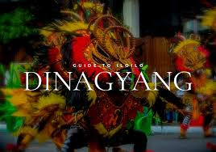

The Dinagyang is a religious and cultural festival in Iloilo City, Philippines held on the fourth Sunday of January, or right after the Sinulog In Cebu and the Ati-Atihan in Aklan. It is held both to honor the Santo Niño and to celebrate the arrival on Panay of Malay settlers and the subsequent selling of the island to them by the Atis.
History
Dinagyang began after Rev. Fr. Ambrosio Galindez of a local Roman Catholic parish introduced the devotion to Santo Niño in November 1967. In 1968, a replica of the original image of the Santo Niño de Cebu was brought to Iloilo by Fr. Sulpicio Enderez as a gift to the Parish of San Jose. The faithful, led by members of Confradia del Santo Niño de Cebu, Iloilo Chapter, worked to give the image a fitting reception starting at the Iloilo Airport and parading down the streets of Iloilo.
In the beginning, the observance of the feast was confined to the parish. The Confradia patterned the celebration on the Ati-atihan of Ibajay, Aklan, where natives dance in the streets, their bodies covered with soot and ashes, to simulate the Atis dancing to celebrate the sale of Panay. It was these tribal groups who were the prototype of the present festival. In 1977, the Marcos government ordered the various regions of the Philippines to come up with festivals or celebrations that could boost tourism and development. The City of Iloilo readily identified the Iloilo Ati-atihan as its project. At the same time the local parish could no longer handle the growing challenges of the festival.
The Dinagyang is divided into three Major events: Ati-Ati Street Dancing, Kasadyahan Street Dancing and Miss Dinagyang.
Today, the main part of the festival consists of a number of "tribes", called "tribus", who are supposed to be Ati tribe members dancing in celebration. It should be noted that no actual Ati are involved nor do they benefit in any way from this event. There are a number of requirements, including that the performers must paint their skin brown and that only indigenous materials can be used for the costumes. All dances are performed to drum music. Many tribes are organized by the local high schools. Some tribes receive a subsidiary from the organizers and recruit private sponsors, with the best tribes receiving the most. The current Ati population of Iloilo is not involved with any of the tribes nor are they involved in the festival in any other way. Dinagyang was voted as the best Tourism Event for 2006, 2007 and 2008 by the Association of Tourism Officers in the Philippines. It is the first festival in the world to get the support of the United Nations for the promotion of the Millennium Development Goals, and cited by the Asian Development Bank as Best Practice on government, private sector & NGO cooperatives.
Dinagyang Legacy
Dinagyang festival has brought a lot of innovations throughout the years. These innovations has influenced the way other festivals in the country is run. Among these are the following:
Carousel Performance - Dinagyang initiated the simultaneous performance of the competing tribes in different judging areas. Mobile Risers - Mobile risers is prominent feature of Dinagyang choreography today. It was introduced by Tribu Bola-bola in 1994. The risers has added depth and has improved the choreography of the dance movements. Dinagyang Pipes - First used by Tribu Ilonganon in 2005, the Dinagyang pipes is made of PVC pipes and is hammered by rubber paddles. Each pipe produces a distinct sound depending on the length and diameter of each pipe. Dagoy - The first festival mascot in the Philippines..